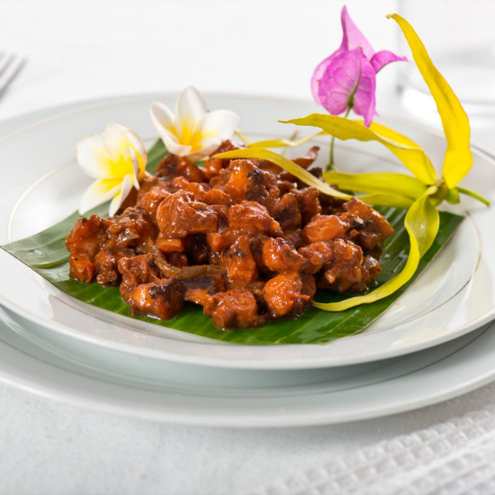

Le Kangué
Véritable emblème de la cuisine familiale et réconfortante, le kangué est un ragoût de viande traditionnel de bœuf. Ce plat met à l'honneur la patience culinaire mahoraise en se concentrant sur un mode de cuisson lent qui sublime la qualité et le goût de la viande.
C'est une spécialité qui se distingue par sa simplicité brute et la tendreté exceptionnelle d'une viande qui se détache toute seule à la dégustation.
Le secret de sa préparation
La particularité du kangué réside dans sa cuisson à l'étouffée, réalisée presque exclusivement dans le propre jus de la viande. Les morceaux de bœuf (souvent coupés avec l'os pour donner plus de goût) sont placés dans une grande marmite fermée avec un filet d'huile, de l'ail, du sel et parfois un peu de tomate. On laisse mijoter à feu très doux pendant plusieurs heures jusqu'à réduction complète.
Une fois le jus totalement évaporé, la viande commence légèrement à dorer dans son propre gras concentré, lui donnant une texture fondante à l'intérieur et délicieusement confite à l'extérieur. Il est traditionnellement escorté de manioc bouilli, de bananes vertes ou de riz blanc.